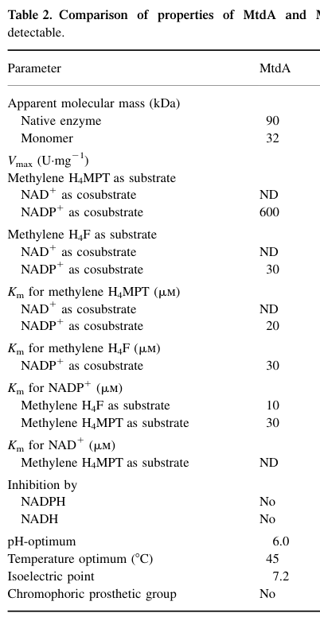

mtdA encodes a bifunctional NADP-dependent dehydrogenase that catalyzes the oxidation of both methylene-H4MPT (EC 1.5.1.-) and methylene-H4F (EC 1.5.1.5) to their respective methenyl forms. The enzyme functions in step 2/5 of formaldehyde degradation via the H4MPT route, but with a 20-fold preference for H4MPT over H4F as substrate (Vmax 600 vs 30 μmol/min/mg). MtdA plays a critical regulatory role in controlling the segregation of C1 carbon flux between assimilation and oxidation pathways. While mtdB serves as the main methylene-H4MPT dehydrogenase in vivo, mtdA's dual substrate specificity allows it to bridge the H4MPT and tetrahydrofolate metabolic pools. The enzyme functions as a homotrimer in the cytoplasm with optimal activity at pH 6.0 and 45°C. Multiple crystal structures have been solved (PDB: 1LU9, 1LUA, 6TGE, 6TLK, 6TM3), including complexes with NADP showing re-face stereospecificity. Direct protein sequencing has confirmed the N-terminal sequence.
Definition: Catalysis of the reaction 5,10-methylenetetrahydromethanopterin + NADP+ = 5,10-methenyl-5,6,7,8-tetrahydromethanopterin + NADPH. This is the primary physiological reaction of M. extorquens MtdA (EC 1.5.1.-, RHEA:24682) and is distinct from the F420-dependent activity captured by GO:0030268.
Justification: MtdA's primary, highest-efficiency activity is NADP-dependent oxidation of methylene-H4MPT, but the only existing methylenetetrahydromethanopterin dehydrogenase MF term (GO:0030268) is defined with coenzyme F420 as the electron acceptor, and GO:0018532 is obsolete. UniProt's GO mapping therefore only assigns the secondary H4F activity (GO:0004488), leaving the enzyme's principal molecular function without an exact GO term.
Parent term: oxidoreductase activity
Supporting Evidence:
| GO Term | Evidence | Action | Reason |
|---|---|---|---|
|
GO:0004488
methylenetetrahydrofolate dehydrogenase (NADP+) activity
|
IEA
GO_REF:0000120 |
ACCEPT |
Summary: Correct - MtdA catalyzes methylene-H4F dehydrogenation with NADP+ as cofactor, though with ~20-fold lower catalytic efficiency than its primary substrate methylene-H4MPT [file:METEA/mtdA/mtdA-uniprot.txt, "catalyze the reversible dehydrogenation of methylene-H(4)F with 20-fold"; file:METEA/mtdA/mtdA-uniprot.txt, "EC=1.5.1.5"]. This is the only molecular_function term assigned by UniProt's GO mapping (UniProtKB-EC); however it captures only the secondary H4F activity, not the enzyme's primary NADP-dependent methylene-H4MPT dehydrogenase reaction (EC 1.5.1.-, RHEA:24682), for which no exact GO MF term currently exists (see proposed_new_terms). Falcon deep research corroborates the dual specificity.
Supporting Evidence:
file:METEA/mtdA/mtdA-deep-research-falcon.md
NADP+-dependent methylene-pterin dehydrogenase
file:METEA/mtdA/mtdA-deep-research-falcon.md
catalytic efficiency for methylene-H4F is reported to be
PMID:9765566
dehydrogenation of methylene tetrahydrofolate (methylene H4F) with NADP+
|
|
GO:0005737
cytoplasm
|
IEA
GO_REF:0000044 |
ACCEPT |
Summary: Correct - MtdA is localized to the cytoplasm where it participates in C1 metabolism [file:METEA/mtdA/mtdA-uniprot.txt, "SUBCELLULAR LOCATION: Cytoplasm"]. Direct cell-fractionation evidence (Hagemeier et al. 2000) supports a soluble/cytosolic enzyme: methylene-H4MPT dehydrogenase activity partitioned into the ultracentrifugation supernatant while the membrane fraction was inactive.
Supporting Evidence:
file:METEA/mtdA/mtdA-deep-research-falcon.md
membrane fraction lacked NAD(P)-dependent methylene-H4MPT dehydrogenase activity
file:METEA/mtdA/mtdA-deep-research-falcon.md
consistent with MtdA not being membrane-associated
|
|
GO:0006730
one-carbon metabolic process
|
IEA
GO_REF:0000043 |
ACCEPT |
Summary: Correct - MtdA is central to C1 metabolism, bridging the H4MPT and H4F pathways [file:METEA/mtdA/mtdA-uniprot.txt, "formaldehyde degradation; formate from"; file:METEA/mtdA/mtdA-uniprot.txt, "formaldehyde (H(4)MPT route): step 2/5"]. Falcon deep research describes MtdA as providing a mechanistic link between H4MPT-linked formaldehyde processing and the H4F C1 pool used for assimilation and biosynthesis.
Supporting Evidence:
file:METEA/mtdA/mtdA-deep-research-falcon.md
a mechanistic link between formaldehyde processing and the H4F C1 pool used for assimilation
file:METEA/mtdA/mtdA-deep-research-falcon.md
generating methenyl-/formyl-H4F for biosynthetic C1 metabolism
|
|
GO:0016491
oxidoreductase activity
|
IEA
GO_REF:0000120 |
KEEP AS NON CORE |
Summary: Correct but too general - MtdA is a bifunctional NADP-dependent dehydrogenase; more specific MF terms are available (GO:0004488 for the H4F activity, and the proposed new term for the primary NADP-dependent methylene-H4MPT dehydrogenase activity).
Reason: The parent oxidoreductase term is not wrong but is uninformative relative to the specific dehydrogenase activities MtdA catalyzes; retained as non-core.
|
|
GO:0046294
formaldehyde catabolic process
|
IEA
GO_REF:0000041 |
ACCEPT |
Summary: Correct - MtdA catalyzes step 2/5 in formaldehyde degradation via the H4MPT route [file:METEA/mtdA/mtdA-uniprot.txt, "formaldehyde degradation; formate from"; file:METEA/mtdA/mtdA-uniprot.txt, "formaldehyde (H(4)MPT route): step 2/5"]. Falcon deep research identifies the H4MPT-linked pathway as the major formaldehyde oxidation/detoxification route in M. extorquens AM1, with MtdA oxidizing methylene-H4MPT to methenyl-H4MPT en route to formate/CO2.
Supporting Evidence:
file:METEA/mtdA/mtdA-deep-research-falcon.md
major formaldehyde oxidation/detoxification route
file:METEA/mtdA/mtdA-deep-research-falcon.md
oxidizing methylene-H4MPT to methenyl-H4MPT
|
Q: Does MtdA contribute non-redundantly to the H4F (serine cycle / biosynthetic) C1 pool in vivo, or is its physiological role essentially confined to the H4MPT formaldehyde-oxidation branch?
Experiment: Construct conditional/depletion alleles of mtdA (since clean nulls appear non-viable) and perform 13C-formaldehyde flux tracing to quantify the relative contribution of MtdA to methenyl-H4MPT versus methenyl-H4F pools under methylotrophic and heterotrophic growth.
Hypothesis: MtdA's essentiality reflects an indispensable role in supplying methenyl-/formyl-H4F for biosynthesis rather than (or in addition to) formaldehyde oxidation.
The research report should be a detailed narrative explaining the function, biological processes, and localization of the gene product. Citations should be given for all claims.
You should prioritize authoritative reviews and primary scientific literature when conducting research. You can supplement
this with annotations you find in gene/protein databases, but these can be outdated or inaccurate.
We are specifically interested in the primary function of the gene - for enzymes, what reaction is catalyzed, and what is the substrate specificity? For transporters, what is the substrate? For structural proteins or adapters, what is the broader structural role? For signaling molecules, what is the role in the pathway.
We are interested in where in or outside the cell the gene product carries out its function.
We are also interested in the signaling or biochemical pathways in which the gene functions. We are less interested in broad pleiotropic effects, except where these elucidate the precise role.
Include evidence where possible. We are interested in both experimental evidence as well as inference from structure, evolution, or bioinformatic analysis. Precise studies should be prioritized over high-throughput, where available.
The literature retrieved here for M. extorquens AM1 uses mtdA to denote an NADP-dependent methylene-tetrahydromethanopterin (methylene-H4MPT) dehydrogenase that also has measurable activity on methylene-tetrahydrofolate (methylene-H4F) (i.e., dual C1-carrier specificity). This matches the UniProt P55818 description of a bifunctional enzyme acting on methylene-H4MPT and methylene-H4F and being NADP-dependent. In the AM1 pathway context, MtdA is consistently distinguished from MtdB (a second methylene-H4MPT dehydrogenase with different cofactor usage) and from cyclohydrolases such as Mch (methenyl-H4MPT cyclohydrolase) or FchA (methenyl-H4F cyclohydrolase). (hagemeier2000characterizationofa pages 7-8, marx2003formaldehydedetoxifyingroleof pages 1-2)
Note on UniProt accession evidence: within the full texts retrieved and evidence snippets, UniProt accessions are generally not printed; however, later synthetic-biology papers explicitly use the M. extorquens AM1 MtdA/MeMtdA enzyme in THF-pathway modules consistent with the UniProt mapping and description (yishai2018invivoassimilation pages 4-6, mohr2025rewiringescherichiacoli pages 1-3).
MtdA is best described as an NADP+-dependent methylene-pterin dehydrogenase with dual substrate specificity:
* Primary: methylene-H4MPT → methenyl-H4MPT with reduction of NADP+ to NADPH. (hagemeier2000characterizationofa pages 1-2)
* Secondary (bifunctional substrate range): methylene-H4F → methenyl-H4F (also NADP+-dependent), including reported reversibility for the H4F reaction. (hagemeier2000characterizationofa pages 7-8, marx2003formaldehydedetoxifyingroleof pages 1-2)
This dual specificity is notable because MtdA shows only minor sequence identity to “classical” bacterial/eukaryotic methylene-H4F dehydrogenases yet still catalyzes methylene-H4F oxidation with lower efficiency. (hagemeier2000characterizationofa pages 1-2)
The AM1 primary literature analyzed here supports bifunctionality in substrate range (H4MPT and H4F) but does not provide evidence that MtdA itself has cyclohydrolase activity. Cyclohydrolase activities are attributed to distinct enzymes (e.g., methenyl-H4MPT cyclohydrolase Mch, methenyl-H4F cyclohydrolase FchA). (hagemeier2000characterizationofa pages 7-8, marx2003formaldehydedetoxifyingroleof pages 1-2)
MtdA is strictly NADP-dependent and catalyzes oxidation of methylene-pterin intermediates to methenyl-pterin intermediates:
* methylene-H4MPT + NADP+ → methenyl-H4MPT + NADPH (hagemeier2000characterizationofa pages 1-2)
* methylene-H4F + NADP+ → methenyl-H4F + NADPH (hagemeier2000characterizationofa pages 7-8, marx2003formaldehydedetoxifyingroleof pages 1-2)
In methanol-grown M. extorquens AM1 cell extracts, methylene-H4MPT-dependent NADP reduction activity was measured at 2.6 U·mg−1, compared with NAD reduction activity of 0.6 U·mg−1 (the NAD-dependent activity relates to the distinct enzyme MtdB rather than MtdA). (hagemeier2000characterizationofa pages 2-3)
A detailed comparison of MtdA and MtdB properties, including Km values and biochemical features, is reported in Hagemeier et al. (2000) and captured in the table image retrieved from that paper. (hagemeier2000characterizationofa media 5ffb354b)
Key reported quantitative properties for recombinant/purified MtdA include:
* Specific activity: purified enzyme ~1100 U·mg−1; cell extracts from overexpression in E. coli up to ~370 U·mg−1. (hagemeier2000characterizationofa pages 5-7)
* Km (apparent, reported): methylene-H4MPT ~20 µM; methylene-H4F ~30 µM; NADP+ ~30 µM (with methylene-H4MPT) and ~10 µM (with methylene-H4F). (hagemeier2000characterizationofa pages 5-7, hagemeier2000characterizationofa media 5ffb354b)
* Oligomeric state: ~32 kDa subunit; apparent native mass ~90 kDa. (hagemeier2000characterizationofa pages 5-7)
* Optima: pH optimum ~6.0; temperature optimum ~45 °C; no inhibition by NADPH. (hagemeier2000characterizationofa pages 5-7)
MtdA’s catalytic efficiency for methylene-H4F is reported to be ~20-fold lower than for methylene-H4MPT, supporting a model in which H4MPT is the primary physiological substrate and H4F is a secondary substrate in vivo. (hagemeier2000characterizationofa pages 1-2)
Direct fractionation evidence supports MtdA as a soluble/cytosolic enzyme. Following ultracentrifugation (150,000 × g, 1 h), the membrane fraction lacked NAD(P)-dependent methylene-H4MPT dehydrogenase activity, while the soluble supernatant contained the activity used for purification—consistent with MtdA not being membrane-associated. (hagemeier2000characterizationofa pages 2-3)
In M. extorquens AM1, the H4MPT-linked pathway is described as the major formaldehyde oxidation/detoxification route during methylotrophic growth. MtdA is one of two methylene dehydrogenases in this network (MtdA and MtdB), oxidizing methylene-H4MPT to methenyl-H4MPT as part of a route ultimately leading to formate/CO2. (marx2003formaldehydedetoxifyingroleof pages 1-2, marx2003formaldehydedetoxifyingroleof pages 6-8)
MtdA also “crosses over” to H4F metabolism by catalyzing methylene-H4F oxidation. In pathway diagrams and discussion, this provides a mechanistic link between formaldehyde processing and the H4F C1 pool used for assimilation and biosynthetic C1 chemistry (e.g., generation of formyl-H4F used in biosynthesis). (marx2003formaldehydedetoxifyingroleof pages 1-2, marx2003formaldehydedetoxifyingroleof pages 2-3)
Both Hagemeier et al. (2000) and Marx et al. (2003) report that null mutants in mtdA could not be obtained (in backgrounds where succinate selection was used), supporting that mtdA is likely essential under tested conditions. (hagemeier2000characterizationofa pages 7-8, marx2003formaldehydedetoxifyingroleof pages 2-3)
Marx et al. (2003) overexpressed mtdA ~7.4-fold relative to wild type. This substantially reduced methanol sensitivity but did not restore growth on methanol in the tested context, leading to the interpretation that MtdA can support only moderate formaldehyde flux when the other dehydrogenase (MtdB) is absent, and that NADP dependence may constrain in vivo capacity. (marx2003formaldehydedetoxifyingroleof pages 6-8)
Although direct 2023–2024 studies focusing specifically on AM1 mtdA biochemistry are limited in the retrieved set, recent work strongly emphasizes deploying the THF-pathway module containing MtdA as a portable C1-assimilation tool.
A 2024 bioRxiv study proposes and demonstrates a Serine Shunt that converts formate → formaldehyde in vivo via an engineered route in E. coli. Critically, its Module 1 (M1) uses Methylorubrum extorquens enzymes MeFtfL (formate-THF ligase), MeFch (methenyl-THF cyclohydrolase), and MeMtdA (methylene-THF dehydrogenase) to convert formate into methylene-THF (consuming ATP and NADPH), which is then transferred to glycine to form serine. Module 2 cleaves serine into formaldehyde and glycine, and formaldehyde production is validated using a GFP-based formaldehyde sensor (signal depends on co-expression of both modules). (schann2024theserineshunt pages 8-13)
This work positions MtdA as an enabling enzyme for “wiring” formate-derived C1 units into central metabolites in a genetically tractable host, relevant for sustainable C1 biomanufacturing concepts. (schann2024theserineshunt pages 8-13)
A 2024 Applied and Environmental Microbiology study shows that glycine betaine catabolism in Methylorubrum extorquens PA1 can be activated by suppressor mutations and that this catabolism generates formaldehyde, directly intersecting methylotrophic metabolism. The paper also notes that demethylation reactions can yield either formaldehyde or methylene-THF (enzyme-dependent) and references THF-linked detoxification possibilities in some bacteria. (hying2024glycinebetainemetabolism pages 1-3)
A 2023 review on CO2-derived feedstocks and biomanufacturing highlights formaldehyde toxicity as a major barrier in aerobic methylotroph engineering (including Methylorubrum/Methylobacterium platforms) and contrasts this with anaerobic Wood–Ljungdahl pathway assimilation that avoids formaldehyde as a free intermediate. (kurt2023perspectivesforusinga pages 16-17)
A 2025 peer-reviewed study demonstrates the use of the M. extorquens THF-assimilation module (MexFTFL, MexFCH, MexMTDA) to channel formate carbon into methylene-H4F for downstream biosynthesis, specifically to supply methyl groups for SAM-dependent methyltransferases in E. coli. Reported quantitative outcomes include:
* 51–81% 13C labeling in methylated products upon feeding labeled formate. (mohr2025rewiringescherichiacoli pages 1-3)
* In an engineered C1-auxotrophic strain, optimizing formate concentration doubled conversion rate and achieved >70% formate-derived methyl groups. (mohr2025rewiringescherichiacoli pages 1-3)
These data represent a concrete engineered implementation of the MtdA-containing module as a C1-unit generator for biocatalysis/whole-cell synthesis. (mohr2025rewiringescherichiacoli pages 1-3)
A 2024 Microbial Cell Factories study engineered Methylorubrum extorquens (TK 0001) for methanol-based glycolic acid production using modeling and redox/central-metabolism interventions; the excerpted sections do not discuss MtdA specifically, but illustrate continued momentum for deploying methylotrophs as production hosts where formaldehyde handling and C1 flux balancing are recurring constraints. (dietz2024anovelengineered pages 1-2, dietz2024anovelengineered pages 5-6)
Physiological primary role: In AM1, MtdA should be viewed primarily as an H4MPT-pathway dehydrogenase contributing to formaldehyde oxidation/detoxification and redox generation (NADPH), rather than as a dedicated H4F dehydrogenase. This is supported by the large activity difference and the reported ~20-fold lower catalytic efficiency on H4F compared with H4MPT. (hagemeier2000characterizationofa pages 1-2, marx2003formaldehydedetoxifyingroleof pages 1-2)
Secondary/biosynthetic role via H4F: Despite lower efficiency on H4F, MtdA may be important because it can provide methenyl-/formyl-H4F for essential biosynthetic pathways (purine and other C1-dependent biosynthesis), consistent with observations that mtdA mutants could not be obtained and that MtdA may be the only enzyme catalyzing certain H4F interconversions in AM1. (hagemeier2000characterizationofa pages 7-8, marx2003formaldehydedetoxifyingroleof pages 2-3)
Engineering significance: The fact that MtdA is soluble, expresses well heterologously, and functions as part of an effective THF C1 module explains why it is repeatedly repurposed for engineered formatotrophy or C1-to-methyl-group conversion. (hagemeier2000characterizationofa pages 5-7, hagemeier2000characterizationofa pages 2-3, mohr2025rewiringescherichiacoli pages 1-3)
The following evidence map consolidates the key functional-annotation findings, experimental contexts, and quantitative values.
| Evidence type | Finding (with quantitative values) | Experimental context | Source (paper + year + DOI URL) |
|---|---|---|---|
| Target identity / core annotation | mtdA in Methylorubrum extorquens AM1 encodes MtdA, a strictly NADP-dependent methylene-H4MPT dehydrogenase that also catalyzes oxidation of methylene-H4F; later literature uses the same enzyme in THF-pathway engineering and identifies the AM1 enzyme as MtdA / Me-MtdA consistent with UniProt P55818 annotation (hagemeier2000characterizationofa pages 7-8, marx2003formaldehydedetoxifyingroleof pages 1-2, yishai2018invivoassimilation pages 4-6) | Primary biochemical genetics in AM1; later heterologous pathway reconstruction in E. coli | Hagemeier et al., 2000, Eur J Biochem, https://doi.org/10.1046/j.1432-1327.2000.01413.x; Marx et al., 2003, J Bacteriol, https://doi.org/10.1128/jb.185.23.7160-7168.2003; Yishai et al., 2018, ACS Synth Biol, https://doi.org/10.1021/acssynbio.8b00131 |
| Reaction(s) catalyzed | Catalyzes dehydrogenation of methylene-H4MPT → methenyl-H4MPT with NADP+ reduction; also catalyzes methylene-H4F → methenyl-H4F with NADP+. Reversible dehydrogenation of methylene-H4F is specifically noted; no cyclohydrolase activity is assigned to MtdA itself (cyclohydrolase is FchA/Mch in adjacent pathway steps) (hagemeier2000characterizationofa pages 7-8, marx2003formaldehydedetoxifyingroleof pages 1-2, hagemeier2000characterizationofa pages 1-2) | Enzyme purified from recombinant expression and interpreted in AM1 C1 metabolism pathway maps | Hagemeier et al., 2000, https://doi.org/10.1046/j.1432-1327.2000.01413.x; Marx et al., 2003, https://doi.org/10.1128/jb.185.23.7160-7168.2003 |
| Substrate specificity | Dual pterin specificity: best substrate is methylene-H4MPT; methylene-H4F is also accepted, but catalytic efficiency for methylene-H4F is reported to be ~20-fold lower than for methylene-H4MPT (hagemeier2000characterizationofa pages 1-2) | Comparative biochemical characterization of recombinant/purified MtdA | Hagemeier et al., 2000, https://doi.org/10.1046/j.1432-1327.2000.01413.x |
| Cofactor specificity | Strictly NADP dependent; cell extracts of methanol-grown AM1 had 2.6 U/mg NADP-dependent methylene-H4MPT dehydrogenase activity versus 0.6 U/mg NAD-dependent activity, the latter attributable to MtdB rather than MtdA (marx2003formaldehydedetoxifyingroleof pages 1-2, hagemeier2000characterizationofa pages 2-3) | Native AM1 cell extracts grown on methanol; chromatographic separation of NADP- vs NAD-dependent activities | Marx et al., 2003, https://doi.org/10.1128/jb.185.23.7160-7168.2003; Hagemeier et al., 2000, https://doi.org/10.1046/j.1432-1327.2000.01413.x |
| Specific activity / expression | Recombinant overexpression in E. coli yielded extract activities up to ~370 U/mg; purified MtdA showed specific activity ~1100 U/mg with 44% purification yield; ~20 mg purified enzyme obtained from ~2.5 g wet cells (hagemeier2000characterizationofa pages 5-7) | Heterologous expression from cloned mtdA in E. coli and purification of recombinant protein | Hagemeier et al., 2000, https://doi.org/10.1046/j.1432-1327.2000.01413.x |
| Kinetic parameters | Reported apparent Km values for MtdA include ~20 µM for methylene-H4MPT, ~30 µM for methylene-H4F, ~30 µM for NADP+ with methylene-H4MPT, and ~10 µM for NADP+ with methylene-H4F; lower NADP+ Km values support MtdA as the main methylene-H4MPT-oxidizing enzyme (hagemeier2000characterizationofa pages 5-7, hagemeier2000characterizationofa pages 7-8, hagemeier2000characterizationofa media 5ffb354b) | Kinetic comparison table for purified MtdA and MtdB | Hagemeier et al., 2000, https://doi.org/10.1046/j.1432-1327.2000.01413.x |
| Oligomeric state / size | MtdA subunit mass reported as 32 kDa; apparent native molecular mass ~90 kDa, consistent with a multimeric soluble enzyme (hagemeier2000characterizationofa pages 1-2, hagemeier2000characterizationofa pages 5-7) | Purified protein characterization | Hagemeier et al., 2000, https://doi.org/10.1046/j.1432-1327.2000.01413.x |
| Biochemical optima / inhibition | pH optimum ~6.0, temperature optimum ~45°C, isoelectric point ~7.2; no inhibition by NADPH reported (hagemeier2000characterizationofa pages 5-7) | Purified recombinant MtdA biochemical characterization | Hagemeier et al., 2000, https://doi.org/10.1046/j.1432-1327.2000.01413.x |
| Localization evidence | Methylene-H4MPT dehydrogenase activity was recovered from the ultracentrifugation supernatant; the membrane fraction lacked NAD(P)-dependent methylene-H4MPT dehydrogenase activity, supporting soluble/cytosolic localization for MtdA (hagemeier2000characterizationofa pages 2-3, hagemeier2000characterizationofa pages 5-7, hagemeier2000characterizationofa pages 1-2) | Native AM1 extract fractionation and chromatographic purification from soluble fraction | Hagemeier et al., 2000, https://doi.org/10.1046/j.1432-1327.2000.01413.x |
| Pathway context | MtdA functions in the H4MPT-linked formaldehyde oxidation pathway and also interfaces with the H4F/serine-cycle branch by generating methenyl-/formyl-H4F for biosynthetic C1 metabolism; pathway diagrams label it as NADP-dependent methylene-H4F/methylene-H4MPT dehydrogenase (marx2003formaldehydedetoxifyingroleof pages 1-2, marx2003formaldehydedetoxifyingroleof pages 2-3) | Formaldehyde oxidation/detoxification model in methylotrophic growth | Marx et al., 2003, https://doi.org/10.1128/jb.185.23.7160-7168.2003 |
| Essentiality / genetics | No null mutants in mtdA could be obtained; reduced-activity mutants could not grow on methanol, indicating likely essentiality for central C1 metabolism and/or formyl-H4F supply (hagemeier2000characterizationofa pages 7-8, marx2003formaldehydedetoxifyingroleof pages 2-3) | Gene disruption / allelic exchange studies in AM1 | Hagemeier et al., 2000, https://doi.org/10.1046/j.1432-1327.2000.01413.x; Marx et al., 2003, https://doi.org/10.1128/jb.185.23.7160-7168.2003 |
| Overexpression phenotype | mtdA overexpression ~7.4-fold above wild type reduced methanol sensitivity but did not restore growth on methanol in the absence of MtdB, implying MtdA can support only moderate formaldehyde flux and may be limited in vivo by its reliance on NADP rather than NAD (marx2003formaldehydedetoxifyingroleof pages 6-8) | Physiological complementation/overexpression analysis in AM1 H4MPT-pathway mutants | Marx et al., 2003, https://doi.org/10.1128/jb.185.23.7160-7168.2003 |
| Modern applications / real-world implementation | AM1 MtdA has been repurposed in engineered THF-based C1-assimilation modules: in synthetic reductive glycine/formate-assimilation systems, M. extorquens enzymes FTL/Fch/MtdA enable reduction of formyl-H4F to methylene-H4F and support assembly of biomass precursors or methyl donors from formate/CO2 (yishai2018invivoassimilation pages 4-6, mohr2025rewiringescherichiacoli pages 1-3) | Heterologous pathway engineering in E. coli and other synthetic C1-assimilation platforms | Yishai et al., 2018, https://doi.org/10.1021/acssynbio.8b00131; Mohr et al., 2025, https://doi.org/10.1186/s12934-025-02674-4 |
Table: This table compiles key functional-annotation evidence for Methylorubrum extorquens AM1 MtdA, including biochemical activity, specificity, kinetics, localization, and physiological relevance. It is useful as a compact evidence map linking the UniProt annotation to primary literature and recent applications.
References
(hagemeier2000characterizationofa pages 7-8): Christoph H. Hagemeier, Ludmila Chistoserdova, Mary E. Lidstrom, Rudolf K. Thauer, and Julia A. Vorholt. Characterization of a second methylene tetrahydromethanopterin dehydrogenase from methylobacterium extorquens am1. European journal of biochemistry, 267 12:3762-9, Jun 2000. URL: https://doi.org/10.1046/j.1432-1327.2000.01413.x, doi:10.1046/j.1432-1327.2000.01413.x. This article has 85 citations.
(marx2003formaldehydedetoxifyingroleof pages 1-2): Christopher J. Marx, Ludmila Chistoserdova, and Mary E. Lidstrom. Formaldehyde-detoxifying role of thetetrahydromethanopterin-linked pathway in methylobacteriumextorquensam1. Journal of Bacteriology, 185:7160-7168, Dec 2003. URL: https://doi.org/10.1128/jb.185.23.7160-7168.2003, doi:10.1128/jb.185.23.7160-7168.2003. This article has 149 citations and is from a peer-reviewed journal.
(yishai2018invivoassimilation pages 4-6): Oren Yishai, Madeleine Bouzon, Volker Döring, and Arren Bar-Even. In vivo assimilation of one-carbon via a synthetic reductive glycine pathway in escherichia coli. ACS synthetic biology, 7 9:2023-2028, May 2018. URL: https://doi.org/10.1021/acssynbio.8b00131, doi:10.1021/acssynbio.8b00131. This article has 203 citations and is from a domain leading peer-reviewed journal.
(mohr2025rewiringescherichiacoli pages 1-3): Michael K. F. Mohr, Ari Satanowski, Steffen N. Lindner, Tobias J. Erb, and Jennifer N. Andexer. Rewiring escherichia coli to transform formate into methyl groups. Microbial Cell Factories, Mar 2025. URL: https://doi.org/10.1186/s12934-025-02674-4, doi:10.1186/s12934-025-02674-4. This article has 8 citations and is from a peer-reviewed journal.
(hagemeier2000characterizationofa pages 1-2): Christoph H. Hagemeier, Ludmila Chistoserdova, Mary E. Lidstrom, Rudolf K. Thauer, and Julia A. Vorholt. Characterization of a second methylene tetrahydromethanopterin dehydrogenase from methylobacterium extorquens am1. European journal of biochemistry, 267 12:3762-9, Jun 2000. URL: https://doi.org/10.1046/j.1432-1327.2000.01413.x, doi:10.1046/j.1432-1327.2000.01413.x. This article has 85 citations.
(hagemeier2000characterizationofa pages 2-3): Christoph H. Hagemeier, Ludmila Chistoserdova, Mary E. Lidstrom, Rudolf K. Thauer, and Julia A. Vorholt. Characterization of a second methylene tetrahydromethanopterin dehydrogenase from methylobacterium extorquens am1. European journal of biochemistry, 267 12:3762-9, Jun 2000. URL: https://doi.org/10.1046/j.1432-1327.2000.01413.x, doi:10.1046/j.1432-1327.2000.01413.x. This article has 85 citations.
(hagemeier2000characterizationofa media 5ffb354b): Christoph H. Hagemeier, Ludmila Chistoserdova, Mary E. Lidstrom, Rudolf K. Thauer, and Julia A. Vorholt. Characterization of a second methylene tetrahydromethanopterin dehydrogenase from methylobacterium extorquens am1. European journal of biochemistry, 267 12:3762-9, Jun 2000. URL: https://doi.org/10.1046/j.1432-1327.2000.01413.x, doi:10.1046/j.1432-1327.2000.01413.x. This article has 85 citations.
(hagemeier2000characterizationofa pages 5-7): Christoph H. Hagemeier, Ludmila Chistoserdova, Mary E. Lidstrom, Rudolf K. Thauer, and Julia A. Vorholt. Characterization of a second methylene tetrahydromethanopterin dehydrogenase from methylobacterium extorquens am1. European journal of biochemistry, 267 12:3762-9, Jun 2000. URL: https://doi.org/10.1046/j.1432-1327.2000.01413.x, doi:10.1046/j.1432-1327.2000.01413.x. This article has 85 citations.
(marx2003formaldehydedetoxifyingroleof pages 6-8): Christopher J. Marx, Ludmila Chistoserdova, and Mary E. Lidstrom. Formaldehyde-detoxifying role of thetetrahydromethanopterin-linked pathway in methylobacteriumextorquensam1. Journal of Bacteriology, 185:7160-7168, Dec 2003. URL: https://doi.org/10.1128/jb.185.23.7160-7168.2003, doi:10.1128/jb.185.23.7160-7168.2003. This article has 149 citations and is from a peer-reviewed journal.
(marx2003formaldehydedetoxifyingroleof pages 2-3): Christopher J. Marx, Ludmila Chistoserdova, and Mary E. Lidstrom. Formaldehyde-detoxifying role of thetetrahydromethanopterin-linked pathway in methylobacteriumextorquensam1. Journal of Bacteriology, 185:7160-7168, Dec 2003. URL: https://doi.org/10.1128/jb.185.23.7160-7168.2003, doi:10.1128/jb.185.23.7160-7168.2003. This article has 149 citations and is from a peer-reviewed journal.
(schann2024theserineshunt pages 8-13): Karin Schann and Sebastian Wenk. The serine shunt enables formate conversion to formaldehyde in vivo. bioRxiv, Jul 2024. URL: https://doi.org/10.1101/2024.07.31.605843, doi:10.1101/2024.07.31.605843. This article has 4 citations.
(hying2024glycinebetainemetabolism pages 1-3): Zachary T. Hying, Tyler J. Miller, Chin Yi Loh, and Jannell V. Bazurto. Glycine betaine metabolism is enabled in methylorubrum extorquens pa1 by alterations to dimethylglycine dehydrogenase. Applied and Environmental Microbiology, Jul 2024. URL: https://doi.org/10.1128/aem.02090-23, doi:10.1128/aem.02090-23. This article has 6 citations and is from a peer-reviewed journal.
(kurt2023perspectivesforusinga pages 16-17): Elif Kurt, Jiansong Qin, Alexandria Williams, Youbo Zhao, and Dongming Xie. Perspectives for using co2 as a feedstock for biomanufacturing of fuels and chemicals. Bioengineering, 10:1357, Nov 2023. URL: https://doi.org/10.3390/bioengineering10121357, doi:10.3390/bioengineering10121357. This article has 39 citations.
(dietz2024anovelengineered pages 1-2): Katharina Dietz, Carina Sagstetter, Melanie Speck, Arne Roth, Steffen Klamt, and Jonathan Thomas Fabarius. A novel engineered strain of methylorubrum extorquens for methylotrophic production of glycolic acid. Microbial Cell Factories, Dec 2024. URL: https://doi.org/10.1186/s12934-024-02583-y, doi:10.1186/s12934-024-02583-y. This article has 10 citations and is from a peer-reviewed journal.
(dietz2024anovelengineered pages 5-6): Katharina Dietz, Carina Sagstetter, Melanie Speck, Arne Roth, Steffen Klamt, and Jonathan Thomas Fabarius. A novel engineered strain of methylorubrum extorquens for methylotrophic production of glycolic acid. Microbial Cell Factories, Dec 2024. URL: https://doi.org/10.1186/s12934-024-02583-y, doi:10.1186/s12934-024-02583-y. This article has 10 citations and is from a peer-reviewed journal.

id: P55818
gene_symbol: mtdA
product_type: PROTEIN
taxon:
id: NCBITaxon:272630
label: Methylorubrum extorquens AM1
description: 'mtdA encodes a bifunctional NADP-dependent dehydrogenase that catalyzes
the oxidation of both methylene-H4MPT (EC 1.5.1.-) and methylene-H4F (EC 1.5.1.5)
to their respective methenyl forms. The enzyme functions in step 2/5 of formaldehyde
degradation via the H4MPT route, but with a 20-fold preference for H4MPT over H4F
as substrate (Vmax 600 vs 30 μmol/min/mg). MtdA plays a critical regulatory role
in controlling the segregation of C1 carbon flux between assimilation and oxidation
pathways. While mtdB serves as the main methylene-H4MPT dehydrogenase in vivo, mtdA''s
dual substrate specificity allows it to bridge the H4MPT and tetrahydrofolate metabolic
pools. The enzyme functions as a homotrimer in the cytoplasm with optimal activity
at pH 6.0 and 45°C. Multiple crystal structures have been solved (PDB: 1LU9, 1LUA,
6TGE, 6TLK, 6TM3), including complexes with NADP showing re-face stereospecificity.
Direct protein sequencing has confirmed the N-terminal sequence.'
existing_annotations:
- term:
id: GO:0004488
label: methylenetetrahydrofolate dehydrogenase (NADP+) activity
evidence_type: IEA
original_reference_id: GO_REF:0000120
review:
summary: Correct - MtdA catalyzes methylene-H4F dehydrogenation with NADP+ as
cofactor, though with ~20-fold lower catalytic efficiency than its primary
substrate methylene-H4MPT [file:METEA/mtdA/mtdA-uniprot.txt, "catalyze the
reversible dehydrogenation of methylene-H(4)F with 20-fold"; file:METEA/mtdA/mtdA-uniprot.txt,
"EC=1.5.1.5"]. This is the only molecular_function term assigned by UniProt's
GO mapping (UniProtKB-EC); however it captures only the secondary H4F activity,
not the enzyme's primary NADP-dependent methylene-H4MPT dehydrogenase reaction
(EC 1.5.1.-, RHEA:24682), for which no exact GO MF term currently exists (see
proposed_new_terms). Falcon deep research corroborates the dual specificity.
action: ACCEPT
supported_by:
- reference_id: file:METEA/mtdA/mtdA-deep-research-falcon.md
supporting_text: NADP+-dependent methylene-pterin dehydrogenase
reference_section_type: OTHER
- reference_id: file:METEA/mtdA/mtdA-deep-research-falcon.md
supporting_text: catalytic efficiency for methylene-H4F is reported to be
reference_section_type: OTHER
- reference_id: PMID:9765566
supporting_text: dehydrogenation of methylene tetrahydrofolate (methylene H4F)
with NADP+
reference_section_type: ABSTRACT
- term:
id: GO:0005737
label: cytoplasm
evidence_type: IEA
original_reference_id: GO_REF:0000044
review:
summary: 'Correct - MtdA is localized to the cytoplasm where it participates in
C1 metabolism [file:METEA/mtdA/mtdA-uniprot.txt, "SUBCELLULAR LOCATION: Cytoplasm"].
Direct cell-fractionation evidence (Hagemeier et al. 2000) supports a soluble/cytosolic
enzyme: methylene-H4MPT dehydrogenase activity partitioned into the ultracentrifugation
supernatant while the membrane fraction was inactive.'
action: ACCEPT
supported_by:
- reference_id: file:METEA/mtdA/mtdA-deep-research-falcon.md
supporting_text: membrane fraction lacked NAD(P)-dependent methylene-H4MPT dehydrogenase
activity
reference_section_type: OTHER
- reference_id: file:METEA/mtdA/mtdA-deep-research-falcon.md
supporting_text: consistent with MtdA not being membrane-associated
reference_section_type: OTHER
- term:
id: GO:0006730
label: one-carbon metabolic process
evidence_type: IEA
original_reference_id: GO_REF:0000043
review:
summary: 'Correct - MtdA is central to C1 metabolism, bridging the H4MPT and H4F
pathways [file:METEA/mtdA/mtdA-uniprot.txt, "formaldehyde degradation; formate
from"; file:METEA/mtdA/mtdA-uniprot.txt, "formaldehyde (H(4)MPT route): step
2/5"]. Falcon deep research describes MtdA as providing a mechanistic link
between H4MPT-linked formaldehyde processing and the H4F C1 pool used for
assimilation and biosynthesis.'
action: ACCEPT
supported_by:
- reference_id: file:METEA/mtdA/mtdA-deep-research-falcon.md
supporting_text: a mechanistic link between formaldehyde processing and the
H4F C1 pool used for assimilation
reference_section_type: OTHER
- reference_id: file:METEA/mtdA/mtdA-deep-research-falcon.md
supporting_text: generating methenyl-/formyl-H4F for biosynthetic C1 metabolism
reference_section_type: OTHER
- term:
id: GO:0016491
label: oxidoreductase activity
evidence_type: IEA
original_reference_id: GO_REF:0000120
review:
summary: Correct but too general - MtdA is a bifunctional NADP-dependent dehydrogenase;
more specific MF terms are available (GO:0004488 for the H4F activity, and the
proposed new term for the primary NADP-dependent methylene-H4MPT dehydrogenase
activity).
action: KEEP_AS_NON_CORE
reason: The parent oxidoreductase term is not wrong but is uninformative relative
to the specific dehydrogenase activities MtdA catalyzes; retained as non-core.
- term:
id: GO:0046294
label: formaldehyde catabolic process
evidence_type: IEA
original_reference_id: GO_REF:0000041
review:
summary: 'Correct - MtdA catalyzes step 2/5 in formaldehyde degradation via the
H4MPT route [file:METEA/mtdA/mtdA-uniprot.txt, "formaldehyde degradation; formate
from"; file:METEA/mtdA/mtdA-uniprot.txt, "formaldehyde (H(4)MPT route): step
2/5"]. Falcon deep research identifies the H4MPT-linked pathway as the major
formaldehyde oxidation/detoxification route in M. extorquens AM1, with MtdA
oxidizing methylene-H4MPT to methenyl-H4MPT en route to formate/CO2.'
action: ACCEPT
supported_by:
- reference_id: file:METEA/mtdA/mtdA-deep-research-falcon.md
supporting_text: major formaldehyde oxidation/detoxification route
reference_section_type: OTHER
- reference_id: file:METEA/mtdA/mtdA-deep-research-falcon.md
supporting_text: oxidizing methylene-H4MPT to methenyl-H4MPT
reference_section_type: OTHER
core_functions:
- description: MtdA is a bifunctional NADP-dependent dehydrogenase that catalyzes
the oxidation of methylene-H4MPT to methenyl-H4MPT (step 2/5 in formaldehyde degradation)
and also oxidizes methylene-H4F to methenyl-H4F, albeit with 20-fold lower catalytic
efficiency (Vmax 600 vs 30 μmol/min/mg). This dual specificity allows MtdA to
bridge the H4MPT and tetrahydrofolate metabolic pools. The enzyme functions as
a homotrimer with optimal activity at pH 6.0 and 45°C. While mtdB serves as the
main methylene-H4MPT dehydrogenase in vivo, MtdA plays a critical regulatory role
in controlling the segregation of C1 carbon flux between oxidation (via H4MPT)
and assimilation (via H4F/serine cycle). Crystal structures reveal re-face stereospecificity
for NADP binding. MtdA represents an evolutionary adaptation linking methylotrophic
and general C1 metabolism.
molecular_function:
id: GO:0004488
label: methylenetetrahydrofolate dehydrogenase (NADP+) activity
directly_involved_in:
- id: GO:0046294
label: formaldehyde catabolic process
- id: GO:0006730
label: one-carbon metabolic process
locations:
- id: GO:0005737
label: cytoplasm
supported_by:
- reference_id: file:METEA/mtdA/mtdA-uniprot.txt
supporting_text: Catalyzes the dehydrogenation of methylene-H(4)MPT.
- reference_id: file:METEA/mtdA/mtdA-uniprot.txt
supporting_text: Vmax=600 umol/min/mg enzyme with methylenetetrahydromethanopterin
as
- reference_id: file:METEA/mtdA/mtdA-uniprot.txt
supporting_text: Optimum pH is 6.0
- reference_id: file:METEA/mtdA/mtdA-uniprot.txt
supporting_text: Optimum temperature is 45 degrees Celsius
- reference_id: file:METEA/mtdA/mtdA-uniprot.txt
supporting_text: Homotrimer
- reference_id: file:METEA/mtdA/mtdA-deep-research-falcon.md
supporting_text: NADP+-dependent methylene-pterin dehydrogenase
reference_section_type: OTHER
- reference_id: file:METEA/mtdA/mtdA-deep-research-falcon.md
supporting_text: catalytic efficiency for methylene-H4F is reported to be
reference_section_type: OTHER
- reference_id: file:METEA/mtdA/mtdA-deep-research-falcon.md
supporting_text: major formaldehyde oxidation/detoxification route
reference_section_type: OTHER
- reference_id: file:METEA/mtdA/mtdA-deep-research-falcon.md
supporting_text: consistent with MtdA not being membrane-associated
reference_section_type: OTHER
- reference_id: PMID:9765566
supporting_text: The purified enzyme catalyzed the dehydrogenation of methylene
H4MPT with NADP+ rather than with NAD+
reference_section_type: ABSTRACT
- reference_id: PMID:9765566
supporting_text: catalytic efficiency (Vmax/Km) were approximately 20-fold lower
than with
reference_section_type: ABSTRACT
references:
- id: GO_REF:0000041
title: Gene Ontology annotation based on UniPathway vocabulary mapping.
findings: []
- id: GO_REF:0000043
title: Gene Ontology annotation based on UniProtKB/Swiss-Prot keyword mapping
findings: []
- id: GO_REF:0000044
title: Gene Ontology annotation based on UniProtKB/Swiss-Prot Subcellular Location
vocabulary mapping, accompanied by conservative changes to GO terms applied by
UniProt.
findings: []
- id: GO_REF:0000120
title: Combined Automated Annotation using Multiple IEA Methods.
findings: []
- id: PMID:9765566
title: The NADP-dependent methylene tetrahydromethanopterin dehydrogenase in Methylobacterium
extorquens AM1.
findings:
- supporting_text: was identified to be the mtdA gene product
reference_section_type: ABSTRACT
- supporting_text: The purified enzyme catalyzed the dehydrogenation of methylene
H4MPT with NADP+ rather than with NAD+
reference_section_type: ABSTRACT
- supporting_text: It also catalyzed the
reference_section_type: ABSTRACT
- supporting_text: dehydrogenation of methylene tetrahydrofolate (methylene H4F)
with NADP+
reference_section_type: ABSTRACT
- supporting_text: catalytic efficiency (Vmax/Km) were approximately 20-fold lower
than with
reference_section_type: ABSTRACT
- supporting_text: dehydrogenation of methylene H4F (E0 = -300 mV) was fully reversible
reference_section_type: ABSTRACT
- id: PMID:8144463
title: 'Genetics of the serine cycle in Methylobacterium extorquens AM1: identification
of sgaA and mtdA and sequences of sgaA, hprA, and mtdA.'
findings:
- supporting_text: This open reading frame was identified as the gene required for
the synthesis of 5,10-methylenetetrahydrofolate dehydrogenase.
reference_section_type: ABSTRACT
- supporting_text: this enzyme plays an integral role in methylotrophic metabolism
in M. extorquens
reference_section_type: ABSTRACT
- supporting_text: either in formaldehyde oxidation or as part of the serine cycle
reference_section_type: ABSTRACT
- id: file:METEA/mtdA/mtdA-deep-research-falcon.md
title: Falcon (Edison Scientific) deep research report for mtdA (P55818), Methylorubrum
extorquens AM1
findings:
- supporting_text: NADP+-dependent methylene-pterin dehydrogenase
reference_section_type: OTHER
- supporting_text: catalytic efficiency for methylene-H4F is reported to be
reference_section_type: OTHER
- supporting_text: MtdA shows only minor sequence identity to
reference_section_type: OTHER
- supporting_text: major formaldehyde oxidation/detoxification route
reference_section_type: OTHER
- supporting_text: MtdA is one of two methylene dehydrogenases in this network (MtdA
and MtdB)
reference_section_type: OTHER
- supporting_text: oxidizing methylene-H4MPT to methenyl-H4MPT
reference_section_type: OTHER
- supporting_text: as part of a route ultimately leading to formate/CO2
reference_section_type: OTHER
- supporting_text: a mechanistic link between formaldehyde processing and the H4F
C1 pool used for assimilation
reference_section_type: OTHER
- supporting_text: generating methenyl-/formyl-H4F for biosynthetic C1 metabolism
reference_section_type: OTHER
- supporting_text: membrane fraction lacked NAD(P)-dependent methylene-H4MPT dehydrogenase
activity
reference_section_type: OTHER
- supporting_text: consistent with MtdA not being membrane-associated
reference_section_type: OTHER
- supporting_text: null mutants in mtdA could not be obtained
reference_section_type: OTHER
- supporting_text: supporting that mtdA is likely essential under tested conditions
reference_section_type: OTHER
- supporting_text: did not restore growth on methanol
reference_section_type: OTHER
proposed_new_terms:
- proposed_name: methylenetetrahydromethanopterin dehydrogenase (NADP+) activity
proposed_definition: Catalysis of the reaction 5,10-methylenetetrahydromethanopterin
+ NADP+ = 5,10-methenyl-5,6,7,8-tetrahydromethanopterin + NADPH. This is the primary
physiological reaction of M. extorquens MtdA (EC 1.5.1.-, RHEA:24682) and is distinct
from the F420-dependent activity captured by GO:0030268.
justification: MtdA's primary, highest-efficiency activity is NADP-dependent oxidation
of methylene-H4MPT, but the only existing methylenetetrahydromethanopterin dehydrogenase
MF term (GO:0030268) is defined with coenzyme F420 as the electron acceptor, and
GO:0018532 is obsolete. UniProt's GO mapping therefore only assigns the secondary
H4F activity (GO:0004488), leaving the enzyme's principal molecular function without
an exact GO term.
proposed_parent:
id: GO:0016491
label: oxidoreductase activity
supported_by:
- reference_id: PMID:9765566
supporting_text: The purified enzyme catalyzed the dehydrogenation of methylene
H4MPT with NADP+ rather than with NAD+
reference_section_type: ABSTRACT
suggested_questions:
- question: Does MtdA contribute non-redundantly to the H4F (serine cycle / biosynthetic)
C1 pool in vivo, or is its physiological role essentially confined to the H4MPT
formaldehyde-oxidation branch?
suggested_experiments:
- description: Construct conditional/depletion alleles of mtdA (since clean nulls
appear non-viable) and perform 13C-formaldehyde flux tracing to quantify the relative
contribution of MtdA to methenyl-H4MPT versus methenyl-H4F pools under methylotrophic
and heterotrophic growth.
hypothesis: MtdA's essentiality reflects an indispensable role in supplying methenyl-/formyl-H4F
for biosynthesis rather than (or in addition to) formaldehyde oxidation.
status: COMPLETE
{kind=link}